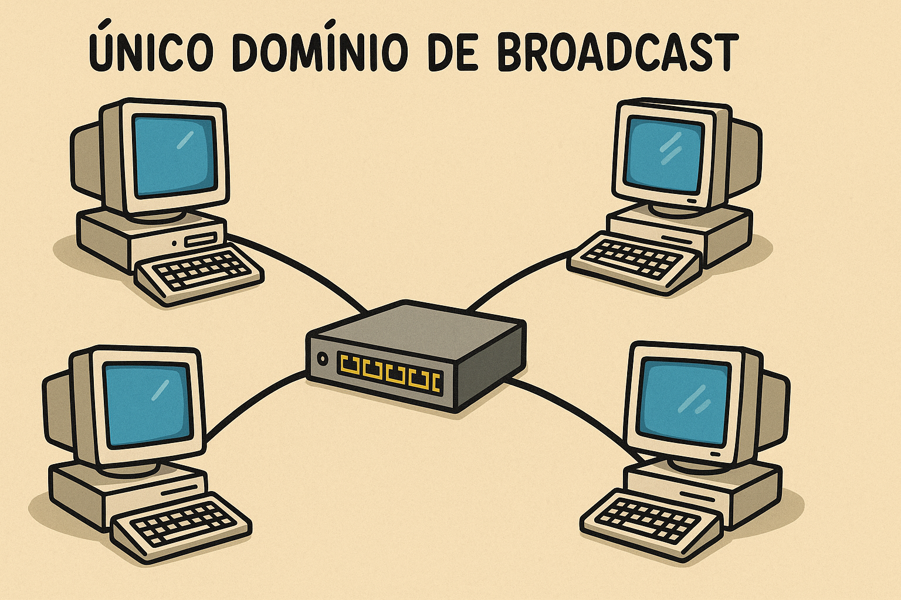
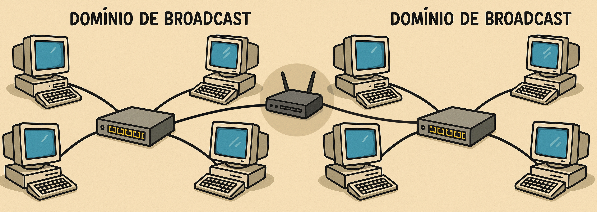
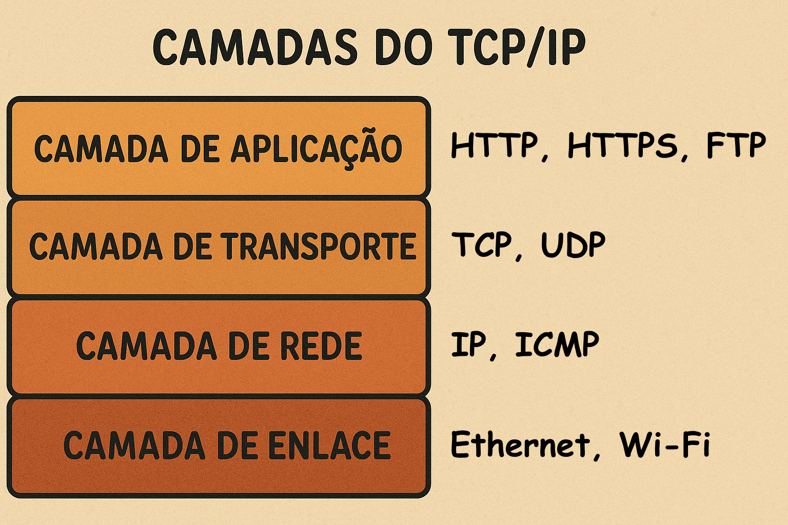

Protocolos de Transporte e Aplicação
Como a Internet Garante a Entrega e Fornece Serviços Essenciais
O Problema da Comunicação em Larga Escala
Imagine uma sala de reuniões gigante com milhares de pessoas. Se alguém grita "MARIA!", todas as Marias da sala respondem, e todas as outras pessoas precisam parar para ouvir a gritaria.
Essa "gritaria" em uma rede é chamada de Broadcast. É uma mensagem enviada para TODOS os dispositivos da mesma rede local.
O Switch e o Domínio de Broadcast
Um Switch (Camada 2) é inteligente para entregar mensagens diretas (unicast) usando Endereços MAC.
Mas quando ele recebe uma mensagem de broadcast, sua única opção é encaminhá-la para TODAS as suas portas, criando um único e grande Domínio de Broadcast.
A Solução: Segmentar a Rede
Para resolver o problema da "gritaria" (broadcast storms) e organizar a rede, precisamos dividi-la em "salas" menores e isoladas.
O dispositivo que faz essa divisão, criando barreiras para os broadcasts, é o Roteador.
O Roteador: Criando Múltiplos Domínios de Broadcast
A regra de ouro: Roteadores NÃO encaminham broadcasts de uma rede para outra.
Cada porta de um roteador conecta-se a uma rede diferente e cria um domínio de broadcast separado e isolado. A "gritaria" de uma sala não passa para a outra.
O Roteador e a Camada de Rede
O Roteador é o principal equipamento da Camada 3 (Rede ou Internet).
Para conseguir "rotear" pacotes entre redes diferentes (ex: da sua casa para o Google), ele não pode usar o Endereço MAC (que só funciona localmente). Ele precisa de um endereço lógico e universal.
Esse endereço é o Endereço IP (Internet Protocol).
A Conexão Lógica: Protocolos
Ok, agora temos "salas" (redes) separadas. Mas como um computador em uma sala envia uma mensagem para outro em uma sala diferente?
Precisamos de um sistema de endereçamento lógico, como CEPs e números de apartamentos, que funcione entre as salas. É aqui que entram os Protocolos.
Introdução a Protocolos
Um protocolo é um conjunto de regras que governa como os dados são formatados e transmitidos. É a "linguagem" que os dispositivos usam para se comunicar de forma organizada.
O protocolo que cuida do endereçamento lógico entre redes diferentes é o IP (Internet Protocol).
Switch vs. Roteador: A Ligação Final
| Característica | Switch | Roteador |
|---|---|---|
| Camada OSI/TCP-IP | Camada 2 (Enlace) | Camada 3 (Rede / Internet) |
| Função | Conecta dispositivos na mesma rede. | Conecta redes diferentes. |
| Endereço | Usa Endereço MAC (físico). | Usa Endereço IP (lógico). |
| Broadcast | Encaminha para todos (cria o domínio). | Bloqueia e isola (separa os domínios). |
A Família de Protocolos TCP/IP
A internet funciona com uma suíte (conjunto) de protocolos. O IP é o responsável pelo endereçamento e roteamento, como se fosse o serviço de correios que só se preocupa com o CEP de origem e destino.
As 4 Camadas como Etapas
Pense nas camadas como etapas de uma linha de montagem para enviar uma carta (seus dados).
- Aplicação: Escreve a carta (ex: DNS, HTTP, DHCP).
- Transporte: Coloca em um envelope, escolhe o serviço (SEDEX ou carta simples) e identifica o destinatário (ex: TCP, UDP, Portas).
- Rede/Internet: Coloca o CEP de origem e destino (ex: Endereço IP).
- Acesso à Rede: Coloca no caminhão do correio local para levar até a agência (ex: Ethernet, Wi-Fi, MAC).
Como os Dados se Transformam (Encapsulamento)
Lembre-se que, à medida que os dados descem as camadas, eles são "embrulhados" (encapsulados) com novos cabeçalhos.
- Aplicação: Seus dados (ex: "Olá!")
- Transporte: Cabeçalho TCP/UDP + Dados = Segmento
- Internet: Cabeçalho IP + Segmento = Pacote (Datagrama)
- Acesso à Rede: Cabeçalho Ethernet + Pacote = Frame
A Camada de Transporte (Nosso Foco Agora)
O IP (Camada 3) sabe entregar um pacote em um computador. Mas como esse computador, que está rodando dezenas de programas, sabe para qual aplicação o pacote se destina?
É a Camada de Transporte que gerencia isso, através das Portas Lógicas.
Portas Lógicas: O Número do Apartamento
Uma porta é simplesmente um número (de 0 a 65535) que identifica unicamente uma aplicação ou serviço rodando no dispositivo.
O Endereço IP (8.8.8.8) leva o pacote até o computador servidor do Google.
A Porta (443) informa ao servidor que este pacote deve ser entregue ao serviço HTTPS (o site seguro).
A combinação IP:Porta (ex: 8.8.8.8:443) é chamada de Socket.
Tipos de Portas
- Portas Bem-Conhecidas (0-1023): Reservadas globalmente para serviços padrão (HTTP, FTP, etc).
- Portas Registradas (1024-49151): Usadas por aplicações específicas (ex: jogos, bancos de dados).
- Portas Dinâmicas/Privadas (49152-65535): Usadas pelo seu SO como porta de "origem" temporária para suas conexões.
Portas Comuns que Você Deve Conhecer
| Porta | Protocolo | Serviço |
|---|---|---|
| 21 | TCP | FTP (Transferência de Arquivos) |
| 22 | TCP | SSH (Acesso Remoto Seguro) |
| 25 | TCP | SMTP (Envio de E-mail) |
| 53 | TCP/UDP | DNS (Resolução de Nomes) |
| **80** | TCP | **HTTP** (Web Comum) |
| **443** | TCP | **HTTPS** (Web Segura) |
Os Dois Protocolos de Transporte
A Camada de Transporte oferece duas "opções de entrega" principais:
TCP (Transmission Control Protocol)
O serviço de entrega confiável (como um SEDEX com rastreamento).
UDP (User Datagram Protocol)
O serviço de entrega rápida e sem garantias (como uma carta simples).
TCP: O Protocolo Confiável
O TCP é orientado à conexão. Ele é usado quando cada bit de informação é vital e precisa chegar na ordem correta.
(Ex: Carregar um site, enviar um e-mail, baixar um arquivo).
As 4 Características do TCP
- 1. Orientado à Conexão: Usa o "3-Way Handshake" para estabelecer uma conexão antes de enviar dados.
- 2. Entrega Confiável: Usa "Confirmações" (ACKs) e retransmite pacotes perdidos.
- 3. Sequenciamento: Numera os pacotes para garantir que sejam remontados na ordem correta.
- 4. Controle de Fluxo: Gerencia a velocidade da transmissão para não sobrecarregar o receptor.
TCP - Característica 1: 3-Way Handshake
Antes de enviar qualquer dado, o cliente e o servidor precisam "apertar as mãos" para sincronizar e confirmar que ambos estão prontos para a comunicação.
Interativo: O 3-Way Handshake
Veja como o Cliente e o Servidor estabelecem a conexão.
TCP - Característica 2 e 3: Confirmação e Sequência
Após a conexão, os dados são enviados em blocos (segmentos). Cada segmento tem um número de sequência.
O receptor usa esses números para remontar os dados na ordem correta e envia confirmações (ACKs) de volta, dizendo "Recebi até o pacote X!". Se o remetente não receber um ACK, ele retransmite o pacote perdido.

TCP - Característica 4: Controle de Fluxo
O TCP usa um conceito chamado "Janela Deslizante" (Sliding Window). O receptor informa ao transmissor o tamanho do seu "buffer" (quanta informação ele consegue receber de uma vez). Isso evita que um transmissor rápido "inunde" um receptor lento.
UDP: O Protocolo Rápido
O UDP (User Datagram Protocol) é o oposto do TCP. Ele é sem conexão (connectionless).
Não há handshake, nem ACKs, nem sequenciamento. Ele simplesmente "dispara e esquece". É muito mais leve e rápido, mas não oferece garantias.
TCP vs. UDP: Tabela Comparativa
| Característica | TCP (Confiável) | UDP (Rápido) |
|---|---|---|
| Conexão | Orientado à Conexão (Handshake) | Sem Conexão |
| Confiabilidade | Alta (ACKs e Retransmissão) | Baixa (Melhor Esforço) |
| Ordenação | Garante a ordem dos pacotes | Não garante a ordem |
| Velocidade (Sobrecarga) | Mais Lento (Header de 20 bytes) | Mais Rápido (Header de 8 bytes) |
| Exemplos de Uso | Web (HTTPS), E-mail, FTP | Streaming, Jogos Online, VoIP, DNS |
A Camada de Aplicação
Finalmente, chegamos à camada superior, onde os serviços que o usuário final "vê" realmente funcionam.
Esta camada usa os serviços da Camada de Transporte (TCP ou UDP) para funcionar. Vamos focar em dois dos serviços mais importantes da internet: **DNS** e **DHCP**.
DNS (Domain Name System)
Nós usamos nomes fáceis de lembrar (google.com). Os roteadores usam números difíceis de lembrar (142.250.218.142).
O DNS é o protocolo que atua como a "lista telefônica" da internet, traduzindo nomes de domínio em endereços IP.
A Hierarquia do DNS
Nenhum servidor no mundo conhece todos os IPs de todos os sites. O DNS é um sistema distribuído e hierárquico.

Interativo: A Jornada da Resolução DNS
Veja a hierarquia de servidores em ação para encontrar o IP de um site.
Clique na seta para a direita para iniciar o processo de resolução DNS.
A Importância do Cache DNS
Fazer essa jornada completa toda vez seria muito lento. Por isso, seu computador, seu roteador e seu provedor de internet guardam as respostas recentes em um Cache.
Se você visitar google.com de novo, seu PC não pergunta a ninguém. Ele já sabe o IP porque está guardado no cache local, e a resposta é instantânea.
DHCP (Dynamic Host Configuration Protocol)
Quando você chega em casa e seu celular se conecta ao Wi-Fi, como ele "ganha" um endereço IP (ex: 192.168.1.100)?
O DHCP é o protocolo de serviço que funciona como um "gerente de hotel". Ele tem uma lista de endereços IP disponíveis e os "aluga" (lease) automaticamente para os dispositivos que entram na rede.
Por que precisamos do DHCP?
Imagine ter que configurar manualmente o IP, a Máscara, o Gateway e o DNS em cada dispositivo que se conecta à sua rede. Seria um pesadelo.
O DHCP automatiza todo esse processo de configuração, tornando as redes "plug-and-play".
O que o DHCP Fornece? (Os 4 Essenciais)
- O Endereço IP (ex: 192.168.1.100)
- A Máscara de Sub-rede (ex: 255.255.255.0)
- O Gateway Padrão (o IP do seu roteador, ex: 192.168.1.1)
- Os Servidores DNS (ex: 8.8.8.8)
O Processo DORA
O DHCP funciona através de quatro passos conhecidos pela sigla DORA. Esse processo é especial, pois o cliente inicia a comunicação sem ter um IP, usando mensagens de broadcast.
- **Discover:** O cliente (sem IP) envia um broadcast para a rede: "Tem algum servidor DHCP aqui?"
- **Offer:** O servidor DHCP responde com um broadcast: "Eu tenho um IP disponível para você."
- **Request:** O cliente envia um broadcast para todos, aceitando o IP ofertado.
- **Acknowledge:** O servidor envia um pacote final com o IP confirmado e todos os parâmetros de rede.
Interativo: O Processo DORA
Veja a negociação de 4 passos para um cliente obter um endereço IP.
Clique na seta para a direita para iniciar o processo DORA.
Resumo: A Jornada Completa
Como tudo isso funciona junto quando você abre seu notebook?
- Você liga o PC. Ele usa DHCP (Discover, Offer, Request, Acknowledge) para obter um IP, Máscara, Gateway e DNS.
- Você digita `google.com` no navegador.
- Seu PC usa DNS para perguntar ao Servidor DNS (obtido via DHCP) qual é o IP de `google.com`.
- O DNS responde com o IP (ex: `8.8.8.8`).
- Seu navegador abre uma conexão TCP (SYN, SYN-ACK, ACK) com `8.8.8.8` na porta `443` (HTTPS).
- Seu PC envia os pacotes TCP. Como `8.8.8.8` está em outra rede, ele os envia para o Gateway Padrão (Roteador).
- O Roteador usa NAT para encaminhar os pacotes para a Internet.
Resumo da Aula
- A Camada de Transporte usa Portas para gerenciar múltiplas aplicações.
- TCP é o protocolo confiável (Handshake, ACKs) usado para web, e-mail, etc.
- UDP é o protocolo rápido (sem garantias) usado para streaming, jogos, VoIP.
- DNS é a "lista telefônica" que traduz nomes em IPs.
- DHCP é o serviço que configura automaticamente o IP, Máscara, Gateway e DNS de um dispositivo (processo DORA).